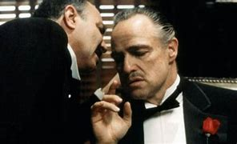
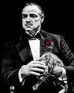

1940’ların sonlarında New York’ta geçen film, İtalyan-Amerikan mafya ailesi Corleone’lerin hikayesini anlatır. Ailenin lideri Don Vito Corleone (Marlon Brando), güç ve saygı ile hüküm sürerken, işleri devralmak istemeyen oğlu Michael (Al Pacino) olaylar karşısında değişir. Aileye yapılan saldırılar ve ihanetler sonucu Michael, mafya dünyasına adım atar ve zamanla acımasız bir lider haline gelir. Film, aile bağları, güç mücadelesi ve ahlaki ikilemler etrafında döner.

